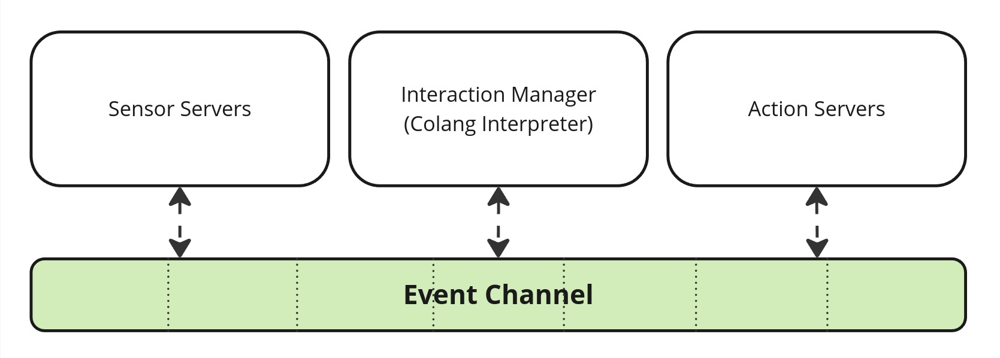

Event Generation & Matching#
Introduction#
When working with Colang, we assume to have a common event channel that contains all relevant events happening in the interactive system. From a Colang perspective, relevant events are all events that are required to model the interaction between the user and the bot. With Colang, you can listen for events on this channel, as well as publish new events to the channel for other components to read:
{kind=link}

The common event channel where all components can read from and write to.#
With Colang you can define a set of event production rules (interaction patterns) that depend on the events from the channel. Let’s first have a look at the plain definition of an event in Colang:
Important
Event definition:
<EventName>[(param=<value>[, param=<value>]…)]
Examples:
# Bot utterance action start event
StartUtteranceBotAction(script="Hello", intensity=1.0)
# Event containing the final user utterance
UtteranceUserActionFinished(final_transcript="Hi")
# A custom event with no parameters
XYZ()
An event uses the Pascal case style naming.
Colang uses the convention that event names are written using Pascal case style. Events can have optional parameters separated by commas with potential default values. You can use these events in Colang statements to build an interaction pattern as a sequence of statements:
Important
Interaction pattern definition:
<statement 1>
<statement 2>
.
.
<statement N>
The statements are processed in order, one by one. We will get to know the different type of statements, starting with the event generation statement:
Important
Event generation statement definition:
send <Event> [as $<event_ref>] [and|or <Event> [as $<event_ref>]…)]
Example:
send StartUtteranceBotAction(script="Hello") as $utterance_event_ref
This generates a UMIM event on the event channel to be received again by other system components. We also introduce the event matching statement:
Important
Event matching statement definition:
match <Event> [as $<event_ref>] [and|or <Event> [as $<event_ref>]…)]
Example:
match UtteranceUserActionFinished(final_transcript="Hi") as $user_utterance_event_ref
A new event processed by the Colang runtime will be compared against all active event matching statements. An event matching statement is considered to be active if all previous statements were successfully processed so far. The event matching statement is only considered successful if the event name and all the provided parameters of the event matching statement are equal to the processed event. Otherwise, the match statement continues waiting for a matching event.
Let’s show this now with an example:
flow main
match Event1() # Statement 1
send Success1() # Statement 2
match Event2(param="a") # Statement 3
send Success2() # Statement 4
> /Event3
> /Event1()
Event: Success1
> /Event2(param="b")
> /Event2(param="a")
Event: Success2
We see that the matching statements only progress if the right event is received. Let’s now have another run to demonstrate the so-called partial match:
> /Event1(param="a")
Event: Success1
> /Event2(param="a", other_param="b")
Event: Success2
From this, we can see that as long as all the provided parameters in the statement match with the parameters of the event, the match statement is successful, even if some of the parameters of the event are missing in the statement. The partial match is considered a less specific match than when all parameters are specified.
Note
A partial event match is a match where the event matching statement does not specify all available parameters of an event. Such a statement matches a set of events for which the specified parameters are equal to the expected values.
We can assign a generated event to a reference to access its attributes at a later point:
flow main
send StartUtteranceBotAction(script="Smile") as $event_ref
send StartGestureBotAction(gesture=$event_ref.script)
match RestartEvent()
Smile
Gesture: Smile
Note, that we did not start the flow with an event matching statement, but rather directly by generating an event instead. Therefore, the two events will be generated immediately at the start. Even though these two events get generated sequentially, from a user point of view they can be considered as concurrent events, since they will be sent out with almost no time difference. We added an event matching statement at the end such that the main flow does not repeat itself infinitely.
Similarly, any event matching statement can capture the observed event with the help of a reference:
flow main
match UtteranceUserActionFinished() as $event_ref
send StartUtteranceBotAction(script=$event_ref.final_transcript)
> Hello!
Hello!
With this you can access event parameters like the final transcript of the user utterance and use it, for example, to let the bot repeat what the user said.
Event Grouping#
Another powerful feature of Colang is the option to group events with the keywords and and or:
flow main
match UtteranceUserActionFinished(final_transcript="hi") and UtteranceUserActionFinished(final_transcript="you")
send StartUtteranceBotAction(script="Success1")
match UtteranceUserActionFinished(final_transcript="A") or UtteranceUserActionFinished(final_transcript="B")
send StartUtteranceBotAction(script="Success2")
> hi
> you
Success1
> A
Success2
> you
> hi
Success1
> B
Success2
Events combined with an and will only match once both events have been observed. Events that are grouped with the keyword or will match as soon as one of the events is observed. With this grouping, one can build much more complex event matching conditions, using brackets to enforce operator precedence (by default or has higher precedence than and):
flow main
match ((UtteranceUserActionFinished(final_transcript="ok") or UtteranceUserActionFinished(final_transcript="sure"))
and GestureUserActionFinished(gesture="thumbs up"))
or ((UtteranceUserActionFinished(final_transcript="no") or UtteranceUserActionFinished(final_transcript="not sure"))
and GestureUserActionFinished(gesture="thumbs down"))
send StartUtteranceBotAction(script="Success")
> ok
> /GestureUserActionFinished(gesture="thumbs up")
Success
> no
> /GestureUserActionFinished(gesture="thumbs down")
Success
> sure
> /GestureUserActionFinished(gesture="thumbs down")
Success
> not sure
> /GestureUserActionFinished(gesture="thumbs down")
Success
Important
Note how a group can be split into multiple lines by using appropriate indentation to better visualize the sub grouping.
We can also use the grouping operators and and or to generate events:
The and operator is equivalent to creating a sequence of send statements where both events are generated.
# This statement ...
send StartUtteranceBotAction(script="Hi") and StartGestureBotAction(gesture="Wave")
# ... is equivalent to the following sequence
send StartUtteranceBotAction(script="Hi")
send StartGestureBotAction(gesture="Wave")
The or operator works like a random selector that will only pick one of the events to be sent out:
# This statement ...
send StartGestureBotAction(gesture="Ping") or StartGestureBotAction(gesture="Pong")
# ... will be evaluated at runtime as one of these two options (at random)
# Option 1:
send StartGestureBotAction(gesture="Ping")
# Option 2:
send StartGestureBotAction(gesture="Pong")
See section Defining Flows - Flow Grouping to learn more about the underlying mechanics of the or-grouping.
Here is an example to showcase the grouping operators:
flow main
send StartUtteranceBotAction(script="Hi") and StartGestureBotAction(gesture="Wave")
send StartGestureBotAction(gesture="Ping") or StartGestureBotAction(gesture="Pong")
match RestartEvent()
You can try that yourself by iterating a couple of times.
Hi
Gesture: Wave
Gesture: Ping
> /RestartEvent
Hi
Gesture: Wave
Gesture: Ping
> /RestartEvent
Hi
Gesture: Wave
Gesture: Pong
Parameter Types#
Colang supports many of the fundamental Python value types: bool, str, float, int, list, set and dict.
Here is a simple example of an event match based on an integer parameter:
flow main
match Event(param=42)
send StartUtteranceBotAction(script="Success")
> /Event()
> /Event(param=3)
> /Event(param=42)
Success
We see that only the last event where the parameter was equal to 42 matched with the matching statement. Matching events with container type parameters like list, set or dict work in the following way:
List:
An event Event(list_param=<actual list>) with a list parameter list_param matches a match statement match Event(list_param=<expected list>) if:
The length of the list
<expected list>is equal to or smaller than the length of the received list<actual list>that is part of the received event.All items in
<expected list>match with the corresponding items in<actual list>. Items at the same position in the list are compared. If an item is a container itself it will be recursively checked based on the rules for that container type.
In the following example, the main flow contains a single match statement that expects a match for an event Event.
flow main
match Event(param=["a","b"])
send StartUtteranceBotAction(script="Success")
Running this flow with the a few input events gives us the following sequence:
> /Event(param=["a"])
> /Event(param=["b","a"])
> /Event(param=["a","b","c"])
Success
The first event does not match since the expected list has more items.
The second event does not match since the order in the expected list is different
The third event matches since the all items of the two lists match (at the same position)
Set:
An event Event(set_param=<actual set>) with a set parameter set_param matches a match statement match Event(set_param=<expected set>) if:
The size of the set
<expected set>is equal to or smaller than the size of the received set<actual set>of the received event.All items in
<expected set>match with an item in<actual set>. The items in<expected set>will be compared with all items in<expected set>until a match has been found or not. If an item is a container itself, it will be recursively checked based on the rules for that container type.
In the following example, the main flow contains a single match statement that expects a match for an event Event.
flow main
match Event(param={"a","b"})
send StartUtteranceBotAction(script="Success")
Running this flow with the a few input events gives us the following sequence:
> /Event(param={"a"})
> /Event(param={"b","a","c"})
Success
The first event does not match since the expected set has more items.
The second event matches since all expected items are available (the order does not matter).
Dictionary:
An event Event(dict_param=<actual dictionary>) with a dictionary parameter dict_param matches a match statement match Event(dict_param=<expected dictionary>) if:
The size of the dictionary
<expected dictionary>is equal to or smaller than the size of the received dictionary<actual dictionary>of the received event.All available dictionary items in
<expected dictionary>match with a corresponding item in<actual dictionary>. Items are compared based on their key and value. If a value is a container itself, it will be recursively checked based on the rules for that value type.
In the following example, the main flow contains a single match statement that expects a match for an event Event.
flow main
match Event(param={"a": 1})
send StartUtteranceBotAction(script="Success")
Running this flow with the a few input events gives us the following sequence:
> /Event(param={"a": 2})
> /Event(param={"b": 1})
> /Event(param={"b": 1, "a": 1})
Success
The first event does not match since the value of item “a” is different from the expected item value
The second event does not match since there is no item with key value “a” in it
The third event matches since all expected items are available in it
Regular Expressions#
Colang also supports Python regular expressions for event parameter matching using the Colang function regex(). If used as a parameter value in a match statement it will check if the received event parameter contains at least one match with the defined pattern, like in Python’s re.search(pattern, parameter_value):
flow main
match Event(param=regex("(?i)test.*"))
send StartUtteranceBotAction(script="Success 1")
match Event(param=regex("1\d*0"))
send StartUtteranceBotAction(script="Success 2")
match Event(param=["a",regex(".*"),"b"])
send StartUtteranceBotAction(script="Success 3")
> /Event(param="Test123")
Success 1
> /Event(param=123450)
Success 2
> /Event(param=["a", "0", "b"])
Success 3
With this you can build powerful matching patterns.